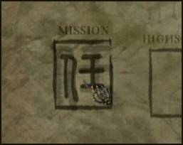
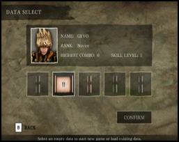
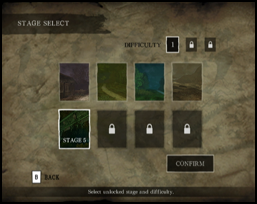

9 |
Menu |
 |
|
Mission  Sélectionnez Mission dans le menu principal pour démarrer le jeu. L'objectif du jeu est d'éliminer tous les fantômes ennemis sur votre chemin et de vaincre la Reine des Fantômes à la fin du niveau. Sélection des données de jeu  Dans le menu DATA SELECT, sélectionnez un nouvel emplacement de données pour démarrer une nouvelle partie, ou un emplacement existant pour charger une partie sauvegardée. Vous pouvez sauvegarder jusqu'à 5 parties. Choix du niveau  Vous commencerez la partie au premier niveau. Les niveaux suivants sont débloqués dès qu'un niveau est terminé. Le niveau de difficulté suivant sera débloqué lorsque les 8 niveaux auront été terminés dans le niveau de difficulté en cours. Vous pouvez sélectionner un niveau non verrouillé à partir du menu de choix du niveau. Profil du personnage  Dans le menu CHARACTER PROFILE, regardez le statut de votre personnage.
Sélectionnez le type d'épée à utiliser avant de commencer chaque niveau.
Les différents types d'épées exécutent des pouvoirs spéciaux de manière différente.
Dans le menu CHARACTER PROFILE, regardez le statut de votre personnage.
Sélectionnez le type d'épée à utiliser avant de commencer chaque niveau.
Les différents types d'épées exécutent des pouvoirs spéciaux de manière différente.Sélection du mode opératoire  Avant de commencer la partie, choisissez d'utiliser ou non l'accessoire Wii MotionPlus. Il ne peut être activé qu'avant le début d'une partie.
Pendant la partie, quittez pour retourner au menu principal puis revenez à la partie si vous voulez changer de mode opératoire.
Avant de commencer la partie, choisissez d'utiliser ou non l'accessoire Wii MotionPlus. Il ne peut être activé qu'avant le début d'une partie.
Pendant la partie, quittez pour retourner au menu principal puis revenez à la partie si vous voulez changer de mode opératoire.Meilleurs scores Sélectionnez HIGHSCORE dans le menu principal. Comparez les meilleurs scores des différents joueurs. Réglages sonores Sélectionnez SETTINGS dans le menu principal. Ce menu vous permet de régler le niveau du fond et des effets sonores. |
 |
 |
 |